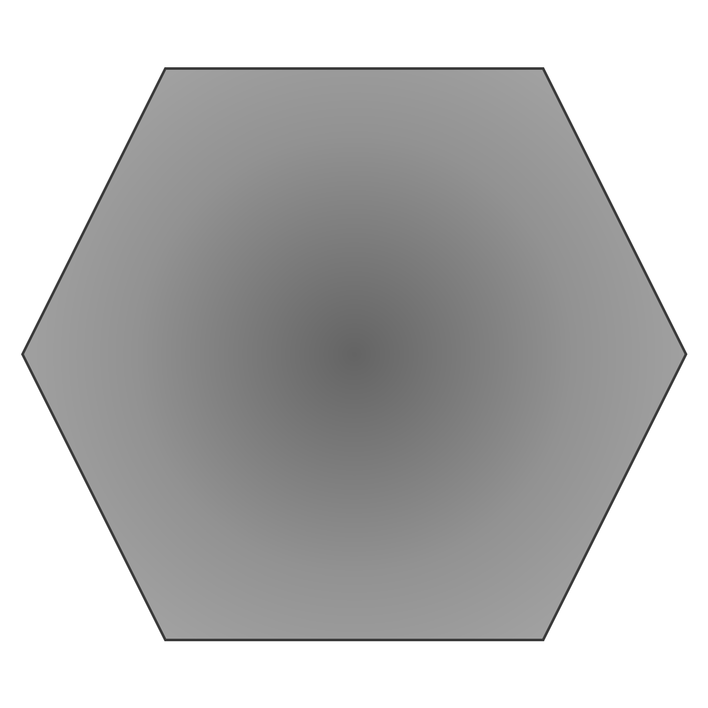
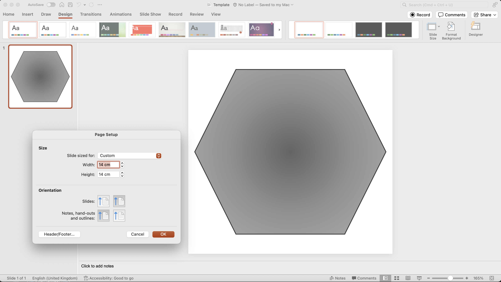

Home
Tutorial: Casein Micelles
Contributors: Tobias Santa Sørensen.

Insert an illustration that also goes here and to the front page. Square format. Please ensure that there are no copyright issues. This caption in italic.
Before you start
- Download and install SasView.
- Download the custom casein micelle model used for data analysis in SasView.
- It is required that you do the Spheres tutorial and the Primary Data Analysis tutorial. We recommend that you also do the Structure Factors tutorial and the Polydispersity tutorial.
Learning outcomes
After completing this tutorial, you will be able to perform analysis of casein micelle data, including- Upload and use a custom Sasview model for SAXS data analysis.
- Estimate physically reasonable starting values before fitting
- Identify which parameters should be fitted and which should remain fixed.
- Assess whether a fit is statistically and physically meaningful.
- Use residuals, $\chi^2$ and parameter correlations to evaluate the reliability of a SAXS model fit.
Introductory remarks
Casein micelles are colloidal protein structures consisting primarily of four different casein proteins. These micelles are stabilized by calcium phosphate clusters, forming a complex architecture. The structure is highly dynamic and sensitive to environmental factors. Their SAXS profiles therefore cannot be interpreted by simply fitting a sphere model. Instead, successful modelling requires combining physical knowledge of the system with an iterative fitting strategy.
Part I: The casein micelle model
Insert casein micelle model etc. here
- Identify a subject that should be covered with a tutorial.
- Consider overall and specific learning outcomes.
- Design 1-3 challenges that can be solved after requiring the skills of the tutorials. Preferably including analysis of real SAXS or SANS data.
- Copy the SASTutorial GitHub page to your computer.
- Copy the template folder and rename it.
- To edit the html files, you must open them in a text editor, if you open them in a browser, you see the final result.
- Make 2-4 parts in the tutorial with walk-through and explained analysis, providing files so the user can do the analysis themself. Explain rule-of-thumbs and pitfalls, og technical challenges. Use images for illustarations, e.g. screenshots from a software package that is demonstrated.
- Find a representative image for the tutorial, make it square format and put in the folder.
- Add your tutorial to the index file (copy one of the other entries and edit).
- Check that everything is working. This can be done locally, in a browser.
- Upload your new tutorial and the edited index file to the GitHub page (this will be checked by developers before being merged and thus be part of the sastutorials.org website).
- Challenge 1: Download this tutorial and add a new part (Part 5) to the tutorial. To see the result, open in a browser, and to edit files, open in a text editor.
- Challenge 2: Add a tutorial to SAStutorials.org, on any aspect of SAXS/SANS analysis that is not yet covered.
- Reporting issues and bugs via our GitHub page. This could be typos, dead links etc., but also insufficient information or unclear instructions.
- Suggesting new tutorials/additions/improvements in the SAStutorials forum.
- Posting or answering questions in the SAStutorials forum.
Part II: Write math
Math can be written in-line, e.g. $E=mc^2$ ($E=mc^2$) or $a=\sqrt{(b^2+c^2)}$ ($a=\sqrt{(b^2+c^2)}$), or it can be written on a separate line by use of double dollor signs, e.g.:
$$q = \frac{9.2\pi}{\lambda} \sin(\theta)$$
which renders as:
$$q = \frac{9.2\pi}{\lambda} \sin(\theta)$$
Try to download this file (right-click > save file as), and correct the mistake in the definition of $q$.
Part III: Insert images (and make it square if used as main illustration)
Images can be inserted in the tutorial
<img src="Template.png" style="width:150px">
Images make the tutorials visually appealing and help explain key concepts and results.
If you have a picture that you want to user as cover illustration for you tutorial (to appear at sastutorial.org front page), it should be square format.
If it is not, you can, e.g., insert it in a power point, and adjust the size (Design -> Slide size), and export it as an image

Try to download this tutorial (right-click > save file as), and change the cover photo (adjust dimensions of the new cover photo if necessary)
Part IV: Higlight with a box
If you have something to highlight (a concept, a check list, a step-by-step guide), it can be highlighted. E.g. this list
<ol style="border-width:3px; border-style:solid;border-color:#697698; padding: 1em; padding-left: 40px; background-color: #f9f9f9">
<b>How to design a new tutorial:</b>
<li>...<\li>
<ol>
-
How to design a new tutorial:
Challenges
The challenges are open tasks that can be solved using the parts above. E.g.:Perspectives
In this section you may add a few examples of how the methods have been used, with key references. Keep it short, it is not a review, but an appetizer.